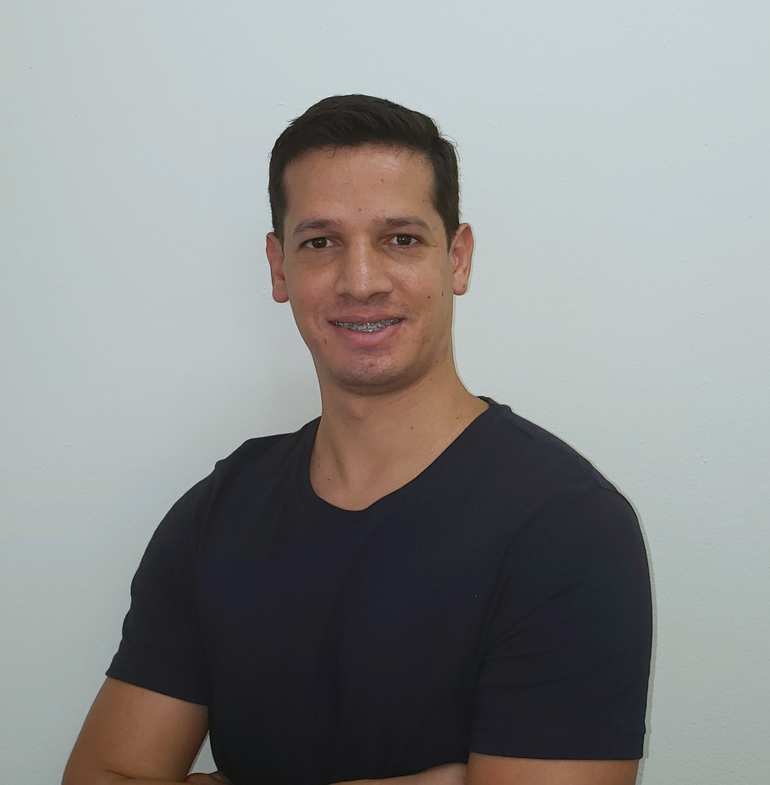

|  |
Adriano Venancio
Founder and CEO of CodeAgil
Product Manager
Apaixonado por empreendedorismo e empreendedor em Startup, sou leitor assíduo sobre o tema e possuo ótimos conhecimentos em Design Thinking, Lean Startup e métodos ágeis aplicando na prática os conhecimentos adquiridos no desenvolvimento de novos negócios. Possuo mais de 10 de anos de experiência em empresas de tecnologia tendo atuado como gerente, líder de equipe, consultor de negócios e analista de sistemas.
|
CONTATO
email: adrianogv@gmail.com
whatsapp: +55 11 97686 3666
São Bernardo do Campo - SP, Brasil
linkedin
EXPERIÊNCIA
- 10/2018 – Presente
Founder
CodeAgil
São Paulo-SP
Responsável pela elaboração e apresentação de propostas para criação de sites, sistemas web e apps para iOS e Android.
- 07/2017 – 09/2018
Founder
1ª rodada (Startup)
São Paulo-SP
O projeto 1ª rodada é um app para celular no qual o usuário paga uma pequena mensalidade e tem direito a consumir 30 drinks no mês nos bares associados. Responsável desde a concepção da idéia, entrevistas com os usuários, wireframes, histórias de usuários, criação de backlog do produto, priorização das atividades, validação das hipóteses com usuários e stakeholders. Durante o desenvolvimento da startup tive acompanhamento e aceleração do Founders Institute.
- 10/2016 – 05/2017
Founder
Padoca em Casa (Startup)
São Paulo-SP
Serviço de assinatura de produtos para o café da manhã em condomínios residenciais. Responsável por efetuar entrevistas com os usuários, apresentação e negociação com possíveis parceiros, priorização das atividades, validação das hipóteses com usuários e stakeholders.
- 10/2012 – 06/2016
Gerente de Projetos, Líder de Equipe e Consultor SAP SD
gA (Grupo ASSA)
São Paulo-SP
Líder da equipe pelo AMS responsável pelo módulo de Vendas e Distribuição (SAP SD) equipe composta por cerca de 10 consultores com skills junior, pleno e sênior. Desenvolvimento de profissionais, atuando como coach e mentor, além de atuar na seleção técnica de novos colaboradores. Como consultor fui responsável pelo levantamento de informações, elaboração de especificações funcionais, criação cenários de testes e análise de impactos. Atuando como Gerente de projetos SAP fui responsável pelas reuniões de status, acompanhamento dos riscos, problemas, deliveries, gestão e controle do plano de trabalho (cronograma, status report, escopo, recursos e riscos). Responsável por identificar desvios no projeto e elaboração de plano de ação. Assegurar visibilidade para todos os envolvidos.
- 01/2008 – 10/2012
Consultor SAP SD
Accenture
São Paulo-SP
Responsável por configurar os processos de venda, devolução, retorno, entrega, fatura, transferências entre plantas, localização Brasil (TAXBRA), MP135, Pricing, NFE 2.0, Solman, Interface SAP/SOFTWAY, Charm, Data migration/LSMW, documentação, especificação funcional, suporte pós go-live; - Empresas: Vivo, Vale, Raizen, Philips, Legrand, Gestamp, Cemar, Basf, Bunge.
SKILLS
| Excel |
⭐⭐⭐ |
Scrum |
⭐⭐⭐ |
| Lean Startup |
⭐⭐⭐⭐⭐ |
Design Thinking |
⭐⭐⭐ |
| UX/UI |
⭐⭐⭐ |
Wireframes |
⭐⭐ |
| Project Management |
⭐⭐⭐ |
Product Management |
⭐⭐⭐ |
CONQUISTA
08/2017 – Presente
Founder Member
Founders Institute
São Paulo-SP
Fundador participante e graduado do programa de aceleração do Founders Institute. O Founder Institute é o principal acelerador de estágio de idéias e programa de lançamento de startups do mundo. É um programa de 14 semanas que fornece a estrutura, o suporte do mentor e a rede global necessária para iniciar uma empresa duradoura. Das 32 pessoas que iniciaram o programa apenas 6 se graduaram.
FORMAÇÃO ACADÊMICA
Bacharel em Sistemas de Informação pelo Centro Universitário Fundação Santo André
CURSOS E CERTIFICADOS
- Product Management (PM3) (07/2019 – Presente) Nº da credencial: 13847483
- Product Management (Udemy) (06/2019 – Presente) Nº da credencial: UC-6JZ67P7Y
- UX & Design Thinking (Udemy) (03/2019 – Presente) Nº da credencial: UC-UITKA55G
- Gestão Ágil com Scrum (Udemy) (03/2019 – Presente) Nº da credencial: UC-HBRGYE0N
IDIOMAS
Inglês Intermediário/Avançado(em desenvolvimento)